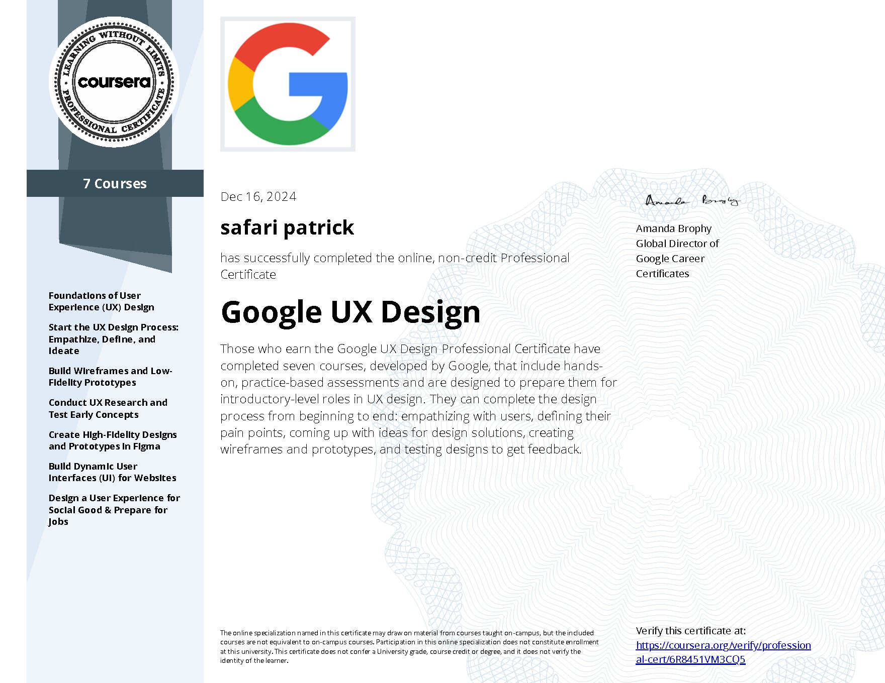

EmpathizeEmpathie
5 user interviews and a survey with 30+ answers about booking habits.5 entretiens et un sondage de 30+ réponses sur les habitudes de réservation.
A restaurant booking app designed around one frustration people kept telling me: it is hard to know which restaurant has a table available now. This page walks through the process and lets you try the design decisions. Une application de réservation pensée autour d'une frustration souvent exprimée : il est difficile de savoir quel restaurant a une table disponible tout de suite. Cette page retrace le processus et vous laisse tester les choix de design.
5 user interviews and a survey with 30+ answers about booking habits.5 entretiens et un sondage de 30+ réponses sur les habitudes de réservation.
Key pain point: no quick way to see real-time availability nearby.Point clé : aucun moyen rapide de voir la disponibilité en temps réel à proximité.
Paper wireframes of several home screens, all putting "free now" first.Wireframes papier de plusieurs écrans d'accueil, tous centrés sur « libre maintenant ».
High-fidelity interactive prototype in Figma.Prototype interactif haute fidélité dans Figma.
3 usability tests showed the "Book" button was too small. Fixed and retested.3 tests d'utilisabilité : le bouton « Réserver » était trop petit. Corrigé puis retesté.
"I book days ahead and I want a reminder."« Je réserve plusieurs jours avant et je veux un rappel. »
"As a busy user, I want to see at a glance which restaurants near me have a free table now."« En tant qu'utilisateur pressé, je veux voir d'un coup d'œil les restaurants proches avec une table libre maintenant. »
Switch between the tested version and the fixed one, then tap "Book" in each. The page measures the button against touch-target guidelines and times how long your tap takes.Passez de la version testée à la version corrigée, puis touchez « Réserver » dans chacune. La page compare le bouton aux recommandations de taille tactile et chronomètre votre geste.
The tool I used to check every color pair in the app. It computes relative luminance the way WCAG 2.1 defines it.L'outil utilisé pour vérifier chaque paire de couleurs de l'app. Il calcule la luminance relative selon la définition WCAG 2.1.
brand/coral
#E5483B
action/teal
#0F766E
ink/900
#15151C
ink/500
#6A6A76
coral/50
#FFE3DC
paper
#FBF7F4
From minimalist to brutalist, each with the UX reasoning and the CSS technique behind it.Du minimalisme au brutalisme, chacun avec le raisonnement UX et la technique CSS associée.
Interviews, surveys, personas and user stories.Entretiens, sondages, personas et user stories.
Usability testing that changed the design.Des tests d'utilisabilité qui ont changé le design.
Touch targets and WCAG contrast checked on every screen.Cibles tactiles et contraste WCAG vérifiés sur chaque écran.

Professional certificate issued through Coursera. The link opens Coursera's own verification page.Certificat professionnel délivré via Coursera. Le lien ouvre la page de vérification officielle de Coursera.